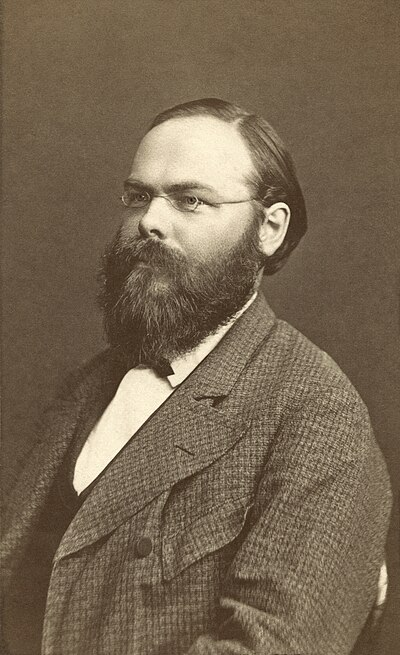

1843–1921
German
Analysis, differential geometry
Karl Hermann Amandus Schwarz was born in Hermsdorf, Silesia, and studied at the University of Berlin, where he was a student of Weierstrass and Kummer. He became one of Weierstrass's most devoted followers, carrying the programme of rigourisation into geometry and complex analysis. He held positions at Halle, the ETH Zurich, and Gottingen before succeeding Weierstrass at Berlin in 1892.
Schwarz's most widely cited result in this course is his theorem on mixed partial derivatives (1873): if $f_{xy}$ and $f_{yx}$ are both continuous, they are equal. The result is sometimes called the Clairaut–Schwarz theorem, as Clairaut had stated it earlier without a rigorous proof. Schwarz's contribution was the first proof meeting modern standards of rigour, including a precise counterexample (Peano's function) showing that the continuity hypothesis cannot be dropped.
The Cauchy–Schwarz inequality also bears his name. While Cauchy proved the finite-dimensional version for sums in 1821, Schwarz (1885) proved the integral version: $\left(\int fg\right)^2 \leq \int f^2 \cdot \int g^2$. This generalisation was essential for developing the theory of inner product spaces and, eventually, Hilbert spaces. As a member of Weierstrass's Berlin school — alongside Cantor and Mittag-Leffler — Schwarz played a central role in establishing the rigorous foundations of modern analysis.
| Phase | Page | Referenced for |
|---|---|---|
| Phase 5 | The Weierstrass M-Test | Student of Weierstrass who disseminated his methods |
| Phase 6 | Inner Products and Gram–Schmidt | Cauchy–Schwarz inequality for integrals (1885) |
| Phase 7 | Partial Derivatives | Clarifying differentiability in multiple variables |
| Phase 7 | Schwarz's Theorem | Equality of mixed partials when continuous (1873) |
| Phase 7 | Schwarz's Theorem | Counterexample showing continuity is necessary |
| Phase 7 | Lagrange Multipliers | Schwarz's theorem ensures Hessian is symmetric |
| Phase 7 | Green's Theorem | Mixed partials commute by Schwarz |
| Phase 7 | Stokes' Theorem | Schwarz's theorem used in curl computations |
| Phase 13 | Principal Axis Theorem | Hessian is symmetric by Schwarz's theorem |